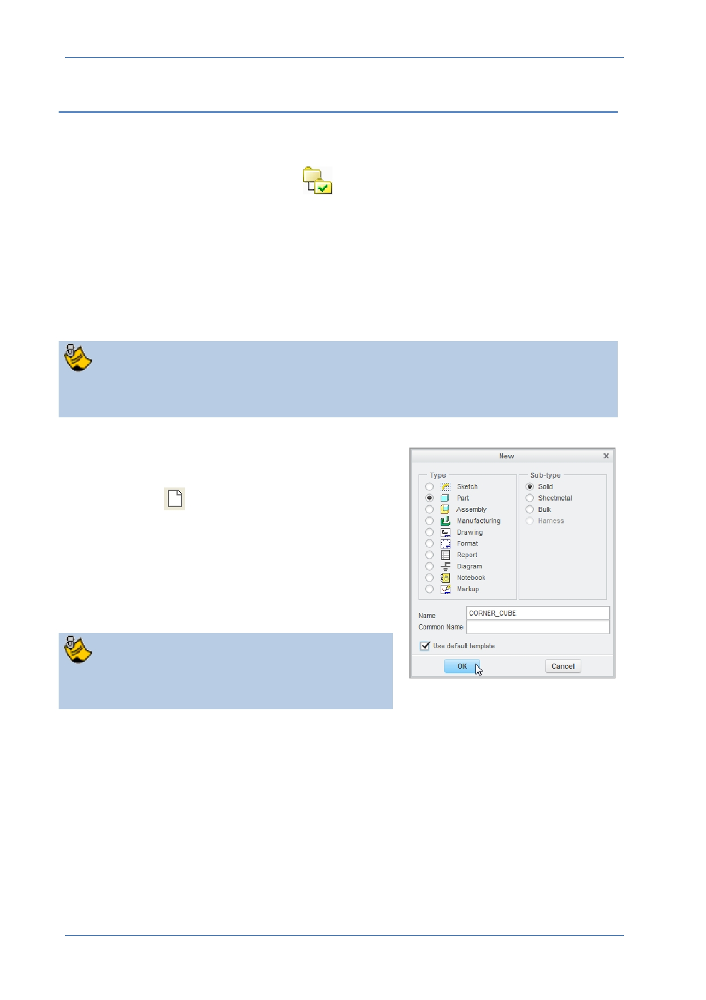

PTC Academic Program
Step 1: Set working directory and create a new part
1. If necessary, start Creo Parametric.
2. Setting the working directory:
Click Select Working Directory
from the Data group of the Home tab.
In the Select Working Directory dialog box, browse into the folder where you want
to store your construction kit components. We suggest that you create a new
folder (right-click and select New Folder from the pop-up menu) for each project
you work on.
After you have browsed into the working directory folder, click OK to set that
folder as your working directory.
The Corner Cube part you create will be saved to, and opened from, this
“working directory”.
3. Creating the new corner cube part model:
From the Quick Access toolbar or Home tab,
click New
.
In the New dialog box, notice the default
object Type is Part and Sub-type is Solid ;
these are the correct options for creating a
solid part.
Type CORNER_CUBE in the Name field and
click OK .
You cannot use spaces in filenames so use
underscores or hyphens instead.
© 2012 PTC
Creo Parametric 2.0 Primer
Page 13